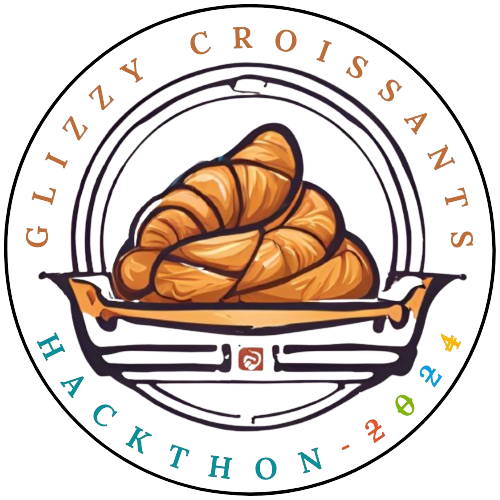

 Glizzy Croissants
Dictionary
Chat with a bot
Practice Questions
Quiz Section #1
Courses
Geometry
Computer Science
Astrology
Search
Login and Register
Astrology Video #1
Practice Questions
Quiz Section #1
Quiz Section
Test your knowledge with these Astronomy questions!
Astrology Quiz
Question 1: What is the main focus of astronomy?
A) Study of celestial objects and the universe
B) Study of human behavior
C) Study of weather patterns
D) Study of plant life
Question 2: What distinguishes science from astrology?
A) Science is based on empirical evidence
B) Astrology is more popular
C) Astrology uses telescopes
D) Science is less interesting
Question 3: How has technology impacted astronomy?
A) Made it less relevant
B) Limited our understanding
C) Revolutionized our study of the universe
D) Decreased job opportunities
Question 4: What is the role of astronomers?
A) Only telescope operators
B) Educators and programmers
C) Engineers and theorists
D) All of the above
Question 5: What does the history of astronomy reveal?
A) It has always been accurate
B) It has changed significantly over time
C) It is only relevant today
D) It has no impact on modern science
Question 6: What is the interconnectedness of sciences?
A) All sciences are completely separate
B) Astronomy overlaps with various fields
C) Only physics relates to astronomy
D) None of the above
Question 7: How did ancient civilizations use astronomy?
A) For navigation
B) For agricultural planning
C) For timekeeping
D) All of the above
Question 8: What is the significance of questioning in science?
A) It stifles progress
B) It is crucial for advancement
C) It leads to confusion
D) It is irrelevant to discoveries
Question 9: What defines modern astronomy?
A) Use of ancient methods
B) Reliance on speculation
C) Technological advancements
D) Limited exploration
Question 10: What characterizes the universe?
A) It is fully understood
B) It is vast and complex
C) It is static
D) None of the above
Submit Answers
Your Score:
/10
Correct Answers and Explanations: